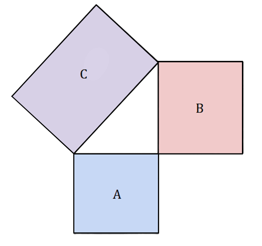

a2 + b2 = c2
32 = 9
B is the longer side relative to A but not bigger than the hypotenuse (c)...52 = 25
Using the pythagorean theorem formula…9 + 25 = 34
c2 = 34
We would have to square root both c and 34 to get the actual length of the hypotenuse…c = √34
The length of the hypotenuse is the square root of 34… But what if the hypotenuse and one of the sides are known…c2 - a2 = b2
48 - 16 = 32
b2 = 32
b = 32 ≈ 5.656
The unknown side of this triangle is approximately 5.656 or the square root of 32…